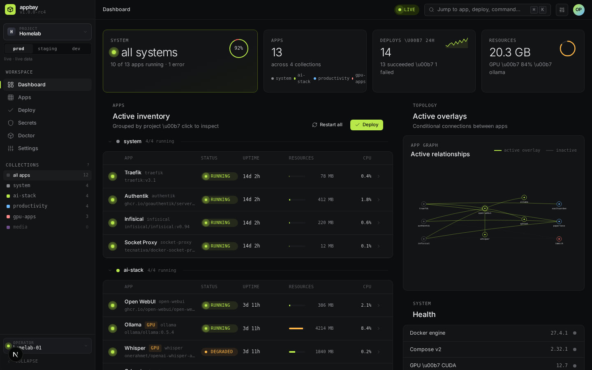

Getting Started
Prerequisites
Before installing Appbay, make sure you have the following on your system:
| Requirement | Minimum version | Check command |
|---|---|---|
| Docker or Podman | Docker 24.0+ / Podman 4.9+ | docker --version / podman --version |
| Compose v2 | v2.23.1+ | docker compose version / podman compose version |
| SELinux (RHEL-family only) | Permissive or Disabled | getenforce |
Compose v2.23.1 or later is required because Appbay uses the configs resource with inline content, which was introduced in that release.
SELinux must not be Enforcing
On RHEL-family hosts (Fedora, RHEL, Rocky, Alma), AppBay requires SELinux to be Permissive or Disabled. This is a prerequisite, not a recommendation — an Enforcing host can start the control plane and serve the UI, and then fail every deploy made from it.
getenforce # must print Permissive or Disabled
sudo setenforce 0 # until the next rebootTo make it durable, set SELINUX=permissive in /etc/selinux/config and reboot.
The cause is not something a relabel can fix. The control-plane container reaches the container runtime through a unix socket, and the denial is SELinux’s unix_stream_socket connectto check against the API service’s own process label. Measured on Fedora 43 with rootful podman 5.6.2:
| SELinux mode | Socket label | Result |
|---|---|---|
| Enforcing | var_run_t |
permission denied |
| Enforcing | container_file_t (relabelled with :z) |
permission denied — a relabel is not enough |
| Permissive | either | works |
A per-container escape hatch also exists if you cannot change the host mode — see the RHEL-family notes below for control_plane_selinux: unconfined, which disables confinement for the control-plane container only rather than for the host.
A policy module granting just connectto would keep confinement, and was considered. It is not planned: it means shipping, versioning and supporting a compiled policy per distribution for a control plane that is already the most privileged container AppBay runs. Requiring Permissive is the honest trade, and stating it up front beats an install that looks healthy and cannot deploy.
Running on Podman
Appbay drives whichever container binary you configure. Point it at Podman once, at init:
appbay init --container-runtime podmanThat writes container_runtime: podman to $APPBAY_HOME/etc/system.yaml, and every command Appbay issues from then on invokes podman. It also works on re-init, so a configuration management run can converge it repeatedly — the command reports created, updated or unchanged so you can drive changed-state from a read-back rather than an exit code.
If you have installed the Docker CLI pointed at a rootful podman.socket via DOCKER_HOST, leave the runtime as docker — that is Podman’s own documented arrangement, and the binary you want invoked really is docker. Set podman only when you want the podman binary itself run.
All three were found by running AppBay on Fedora with SELinux enforcing, and none of them reproduces on Ubuntu — Docker simply does not have these behaviours.
1. SELinux blocks bind mounts unless they are labelled. A container process runs as container_t and cannot read a file labelled user_home_t, which is what everything under your home directory is. The failure is a bare permission error with no mention of SELinux:
Error: reading config from file: open /etc/caddy/Caddyfile: permission deniedThe edge crash-looped 62 times on exactly this, while the deploy reported “configuration rejected” — sending the operator to inspect a config file that was perfectly valid.
AppBay now adds the :z (shared relabel) option to every bind mount it generates, so its own apps are fine. If you write your own compose with a bind mount, add it yourself:
volumes:
- ./config:/etc/app/config:ro,z # the ,z is not optional on SELinux hostsDocker accepts and ignores the option, so it is safe to write unconditionally.
2. Image names must be fully qualified. RHEL-family hosts set short-name-mode = "enforcing" in /etc/containers/registries.conf, so Podman refuses to guess a registry — and in any automation there is no TTY to prompt on:
Error: short-name resolution enforced but cannot prompt without a TTYUse the full path. Note that Docker Hub official images live under library/:
image: docker.io/library/postgres:16 # official image
image: docker.io/grafana/grafana:latest # user imageDocker assumes docker.io silently, which is why an unqualified name works there and fails here.
3. The control plane container cannot reach the runtime socket, even as root. This one only bites if you run the web UI via appbay server start; the CLI on the host is unaffected. Measured on Fedora 43 with rootful Podman:
$ sudo podman exec appbay.server docker version
permission denied while trying to connect to the docker API at unix:///var/run/docker.sockThe server starts, reports healthy and serves the UI — and then every deploy from the web fails. Relabelling the socket does not fix it: the denial is SELinux’s unix_stream_socket connectto check against the API service’s own process label, which no file label can satisfy.
The switch is one line in $APPBAY_HOME/etc/system.yaml:
control_plane_selinux: unconfinedThen appbay server start again. Confirm with sudo podman exec appbay.server docker version, which should print your Podman version.
⚠️ Understand what you are turning off. This adds security_opt: [label=disable] to the control-plane container — the most privileged container AppBay runs. It is off by default and absent means off, so nothing changes until you set it. The alternative that keeps confinement is an SELinux policy module granting just connectto; AppBay does not ship one yet.
AppBay’s alpha runtime matrix is Docker and rootful Podman. Rootless Podman is not gated on, and these are the specific reasons — all measured on Fedora 43, not inferred:
It cannot bind the edge’s ports. net.ipv4.ip_unprivileged_port_start is 1024 on a stock host, so a rootless container cannot take :80 or :443:
podman run --rm -d -p 80:80 busybox sleep 20 → refusedThe ingress edge exists to own those ports, so a rootless install has no edge. Apps themselves run fine.
Rootless and rootful are separate worlds, and AppBay does not model which one you are in. They keep different stores:
rootless /run/user/1000/containers
rootful /run/containers/storageA rootless podman ps sees none of the rootful containers and vice versa. In practice this means appbay init run as your user creates appbay_shared in the rootless store, and a later sudo appbay up cannot see it:
Error: External network [appbay_shared] does not existsappbay doctor is honest here — run under sudo it correctly reports the network missing rather than reading the other context’s state. But nothing records which context an install is bound to, and nothing warns when you switch. Pick one and stay in it. If you use rootful (recommended, and required for the edge), run every appbay command with the same privilege, including init.
This is a known limitation with an open design decision behind it; it is not a bug you need to report.
compose version succeeding does not mean compose works
Podman hands compose off to an external provider (docker-compose if installed, podman-compose otherwise). A provider much newer than the Podman it talks to can report its version perfectly and then fail to create containers — measured with podman 6.0.2 and docker-compose v5.1.2, which fails up with no such image on an image Podman demonstrably holds.
Verify by deploying something, not by reading a version banner:
appbay doctor # necessary, not sufficient
appbay up <some-app> # this is the actual testAppBay enforces a floor of podman-compose 1.5.0. Older releases cannot parse the long-form env_file AppBay emits (Compose Spec v2.24+) and fail with:
TypeError: join() argument must be str, bytes, or os.PathLike object, not 'dict'Measured: podman-compose 1.0.6 creates containers perfectly from a hand-written compose file and still cannot run AppBay — which is why the floor is set from AppBay’s own output, not from whether the provider starts.
If the pairing fails, select the other provider — it is configuration, not a rebuild:
export PODMAN_COMPOSE_PROVIDER=podman-compose
# or set it permanently in containers.conf(5): [engine] compose_providersAppbay ships as a single compiled binary — no Node.js, Bun, or other runtime is needed on the target machine.
Looking for the full bootstrap journey? See bootstrap.md for the complete single-binary path — doctor → init-system → init → setup → first app — with exact commands, expected output, and failure modes for both human and AI operators.
Installation
One-line install (recommended)
curl -fsSL https://raw.githubusercontent.com/kundeng/appbay-cli/main/scripts/install.sh | shThe installer detects your OS and architecture (Linux/macOS, x64/arm64), downloads the latest release binary, and places it in /usr/local/bin/appbay (if writable) or ~/.local/bin/appbay. Override with APPBAY_INSTALL_DIR.
Self-update
Once installed, update to the latest release with:
appbay updateBuild from source (for contributors)
If you want to develop on Appbay itself, clone and build:
# Requires: Node.js 22+, pnpm, Bun
git clone https://github.com/kundeng/appbay-cli.git
cd appbay-cli
pnpm install
pnpm turbo buildThe CLI binary is built at ./apps/cli/dist/appbay. You can symlink it into your PATH:
ln -s "$(pwd)/apps/cli/dist/appbay" ~/.local/bin/appbayVerify installation
appbay versionSet up Appbay
The setup command is the recommended way to get started. It handles everything: scaffolding directories, creating the Docker network, configuring the Caddy Security edge (ingress + authentication), and deploying system apps:
appbay setupThe wizard prompts for your project name and base domain, then runs through 7 steps automatically. At the end, it prints bootstrap credentials for the admin user.
Non-interactive mode
For scripting or CI, pass all options as flags:
appbay setup --domain homelab.example.com --project homelab --yesAuthentication is a property of the edge you choose, not a flag. There are two supported edges and a host runs exactly one, because both bind ports 80 and 443:
# Ingress + browser login + role-based authorization (default)
appbay setup --domain homelab.local --ingress-provider caddy --yes
# Ingress only — TLS and routing, no authentication
appbay setup --domain homelab.local --ingress-provider traefik --yesauth trait requires the Caddy Security edge
On a Traefik installation an app declaring type: auth fails to compile with a message saying so. Traefik is a supported ingress mode; it is not an authentication provider.
macOS users: Appbay works with OrbStack (recommended) and Docker Desktop. No special configuration needed – appbay setup detects your Docker runtime automatically.
Check setup status
After setup (or if you’re debugging a partial install), run:
appbay setup --statusThis shows which steps are complete and which are missing.
Low-level alternative: appbay init
If you only need the directory scaffold without deploying system apps:
appbay init --project homelab --domain homelab.example.com --yesThis creates the $APPBAY_HOME structure but does not configure the edge or deploy anything.
Check prerequisites
Run doctor to verify that all dependencies are installed and configured correctly:
appbay doctorThe doctor runs seventeen checks: platform detection; the container runtime and whether the current user can reach it without sudo; Compose presence and version; APPBAY_HOME; the shared network and whether names actually resolve on it; healthcheck start_period; Traefik and Caddy Security config; vault status; KeePass database and keepassxc-cli; server status; GPU availability; and SOPS.
Checks are required or optional, and the distinction matters when reading the output: an optional check that fails is a warning, not a failure. A missing GPU does not make the install unhealthy.
Everything is named after the runtime you configured, so on a Podman install it reports Podman and podman-compose — it will not tell you to install Docker. The web UI’s Doctor screen runs this same code, so the two cannot disagree.
Deploy your first app
Appbay ships with a whoami starter app – a lightweight HTTP service that returns request headers. Deploy it:
appbay up whoamiBehind the scenes, Appbay:
- Discovers the app in
$APPBAY_HOME/etc/apps/whoami/ - Reads
docker-compose.yml(andappbay.yamlif present) - Resolves traits, overlays, and scoped variables
- Renders the final compose file to
var/lib/renders/ - Runs
docker compose up -dwith the rendered output
Verify it works
curl http://localhost:8888You should see the container’s hostname and request headers printed back.
Check app status
appbay ps whoamiAPP SERVICE STATUS PORTS
whoami web running 0.0.0.0:8888->80/tcpView logs
appbay logs whoami --followPress Ctrl+C to stop following.
Stop the app
appbay down whoamiStart the web UI
The web UI provides a dashboard, deploy planner, log viewer, config editor, and built-in shell. Start the control plane:
appbay server startserver start writes the edge’s route to the control plane and binds port 3000 to loopback in the same step, so the way in is https://appbay.<your-domain> — the same Caddy Security portal that guards your apps.
Sign in with the edge administrator appbay setup printed. There is no second account and no first-run setup screen.
appbay setup printed
This used to be a different credential: a control-plane administrator in $APPBAY_HOME/etc/control-plane/users.yaml, created on a first-run screen, deliberately never synchronised with the edge. RFC-001 §1 removed it — the UI is a stack behind the edge like any other, so the edge account is the account.
⚠️ It must hold the authp/admin role. The control plane’s route carries an admin-only policy, narrower than an app’s default, because it is the one stack that can reach the container runtime socket.
⚠️ Without an edge route the server does not fall back to a password. It has no way to authenticate anyone and says so instead of serving. If you see that, set domain: in etc/system.yaml and re-run appbay server start.

Once you sign in, the dashboard shows your running apps grouped by collection, system health, and the overlay relationship graph.
Next steps
You now have a working Appbay installation. From here:
- Read Core Concepts to understand how apps, traits, and overlays work together.
- Read Managing Apps to learn how to add your own applications.
- Run
appbay list --allto see all available apps, including system apps. - Try
appbay up --collection ai-stackto deploy an entire collection at once (after adding apps to that collection).
Troubleshooting
appbay init fails with permission errors
Make sure you have write access to the target directory. By default, this is ~/.appbay. You can override it with --dir or by setting the APPBAY_HOME environment variable.
Docker socket not accessible
Appbay needs access to the Docker socket. If you get “permission denied” errors:
- Linux: Add your user to the
dockergroup:sudo usermod -aG docker $USER(log out and back in) - macOS (OrbStack): OrbStack handles socket permissions automatically. Make sure OrbStack is running.
- macOS (Docker Desktop): Ensure Docker Desktop is started and the socket path is accessible.
Compose version too old
Appbay requires Docker Compose v2.23.1 or later. Update with:
# If using Docker Desktop, update Docker Desktop
# If using standalone compose plugin:
docker compose version # check current
sudo apt-get update && sudo apt-get install docker-compose-plugin